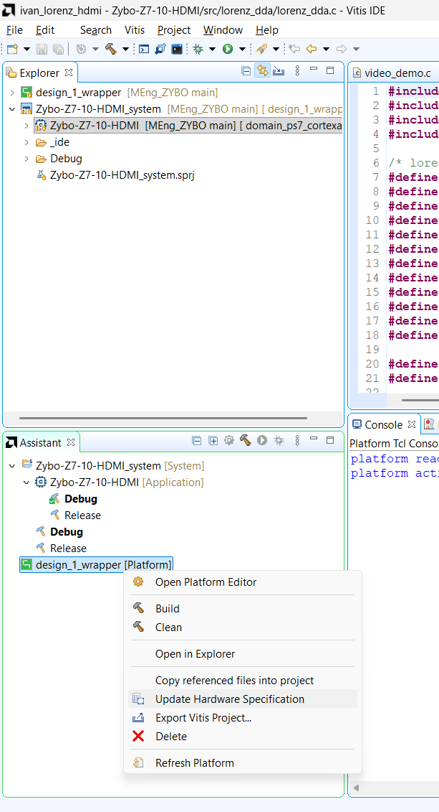

Vitis platform and BSP
Make the BSP see the new hardware and get past the driver Makefile typo.
06.1Update the Vitis platform
- Right-click platform
design_1_wrapper→ Update Hardware Specification → pick the newdesign_1_wrapper.xsa. - Clean Project, then Build Project on the platform (this rebuilds the BSP; there is no separate 'build BSP').
Until this is done the BSP still holds the Digilent 2024-07-04 files and has no LORENZ macro; the app would still compile because the Lorenz code is behind #ifdef, and silently do nothing.

Related: Issue I-06
06.2Fix the driver Makefile typo
- Platform build failed in
lorenz_dda_driver_v1_0; fix($wildcard ...)→$(wildcard ...)(LIBSOURCES and OUTS). - Fix the source (
ip_repo/.../drivers/.../src/Makefile) and re-export if the BSP re-extracts it; copies also live indesign_1_wrapper/hw/drivers,tempdsa/drivers, the app BSPlibsrc, the FSBL BSPlibsrc, andZybo-Z7-HW.gen/.../ip/.../drivers. - Rebuild the platform: 'Build Finished', libxil.a rebuilt for both BSPs.
The typo is in the Vivado-generated driver template, so it comes back with every fresh copy of the IP; the cannot find -lrsa error that follows is only a knock-on.
arm-xilinx-eabi-gcc.exe: error: (ildcard: linker input file not found: No such file or directory
arm-xilinx-eabi-gcc.exe: error: *.c): linker input file not found: Invalid argument
make[1]: *** [Makefile:46: ps7_cortexa9_0/libsrc/lorenz_dda_driver_v1_0/src/make.libs] Error 2
Failed to generate the platform. Reason: Failed to build the zynq_fsbl application.# broken (Vivado 2024.1 generated):
LIBSOURCES=($wildcard *.c) # make expands $w (empty) -> gcc gets '(ildcard' and '*.c)'
OUTS = ($wildcard *.o)
# fixed:
INCLUDEFILES=$(wildcard *.h)
LIBSOURCES=$(wildcard *.c)
OUTS = $(wildcard *.o)Figure (text only). The console output is the log excerpt above.
Related: Issue I-07
06.3Confirm the macro exists
- Open the BSP
xparameters.hand searchLORENZ:XPAR_LORENZ_DDA_DRIVER_0_S00_AXI_BASEADDR=0x43C30000. The file must have a current modification time. - The generated
lorenz_dda_driver.hin the BSP is stale (onlySLV_REG0-6); it is not used — the app defines its own offsets.
This macro is the switch that compiles the Lorenz code in.
/* design_1_wrapper/ps7_cortexa9_0/domain_ps7_cortexa9_0/bsp/ps7_cortexa9_0/include/xparameters.h */
#define XPAR_LORENZ_DDA_DRIVER_0_S00_AXI_BASEADDR 0x43C30000Figure (text only). Searching the file for LORENZ finds one define, XPAR_LORENZ_DDA_DRIVER_0_S00_AXI_BASEADDR (see the snippet above).
← 05 Bitstream and XSA · 07 PS driver →
docs-site/figures/ (see its README).